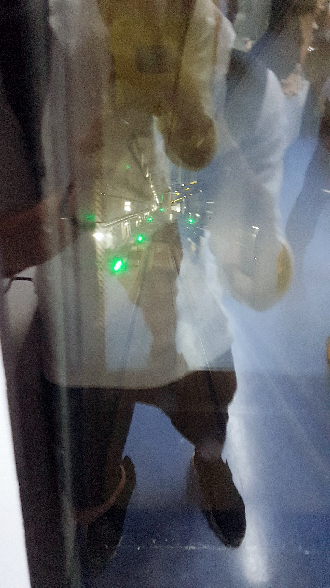
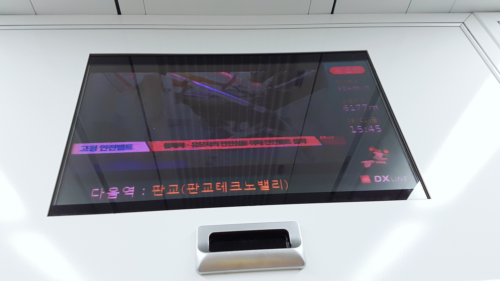
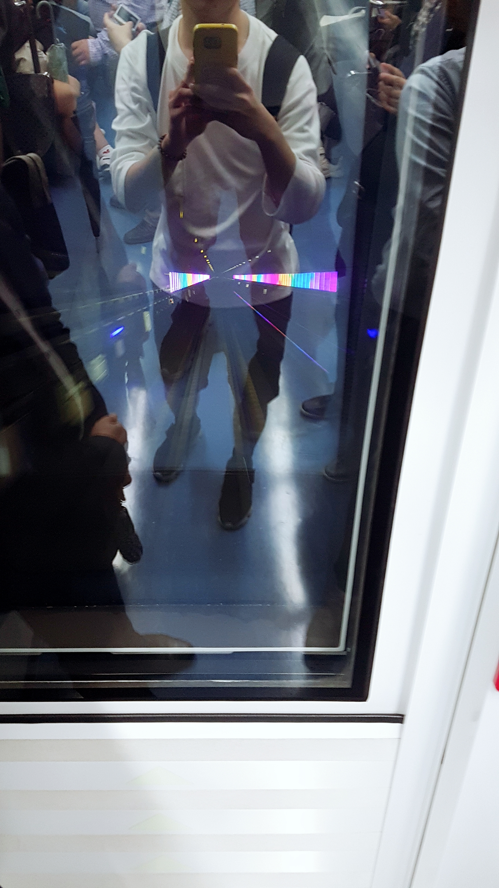
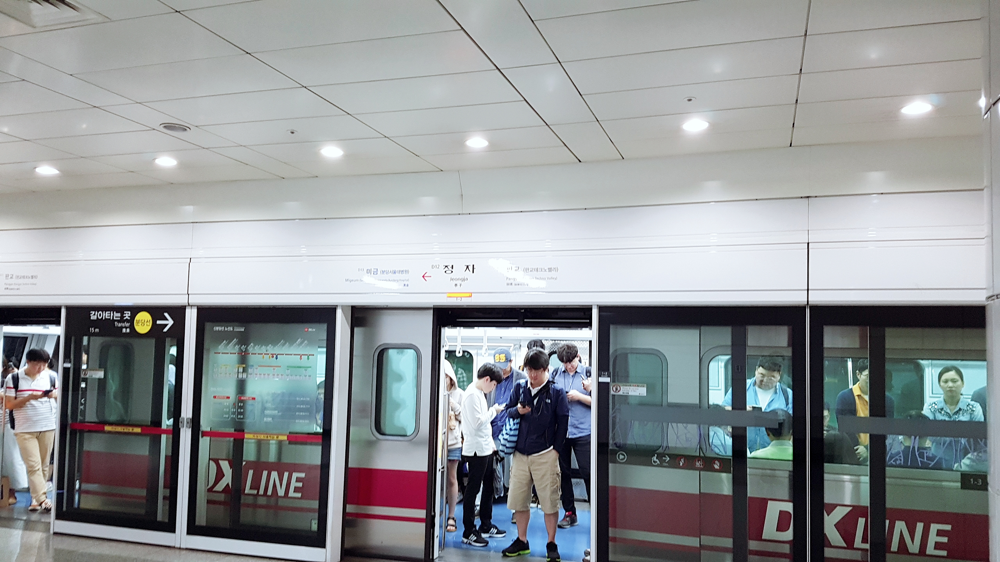
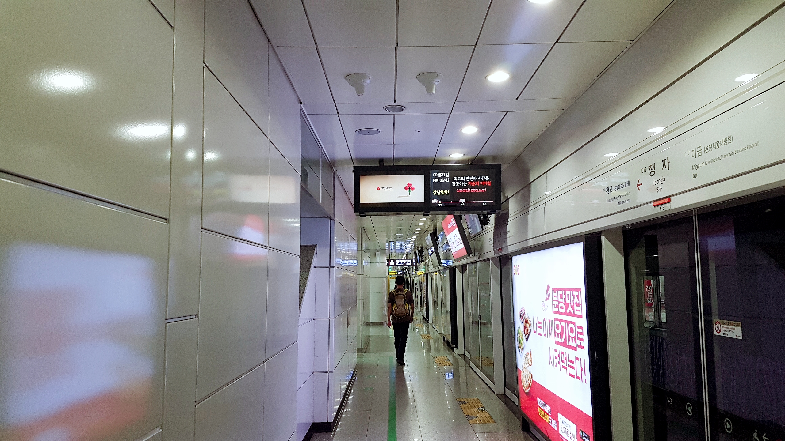
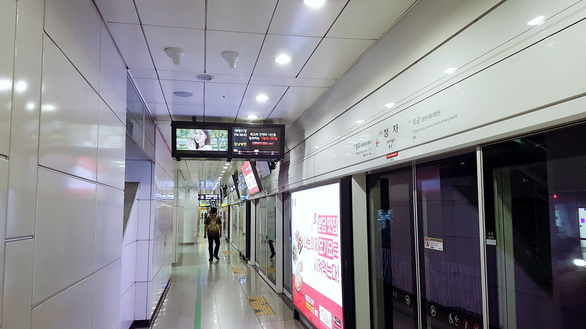
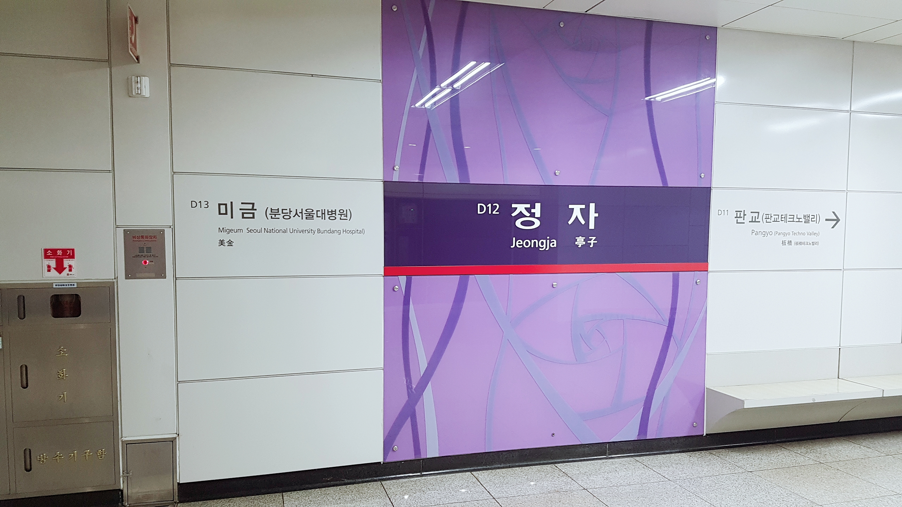
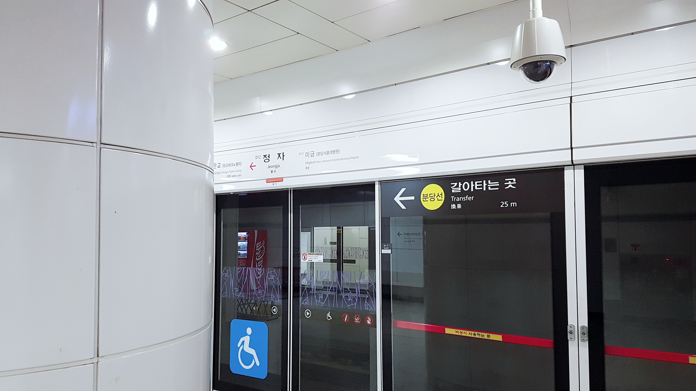
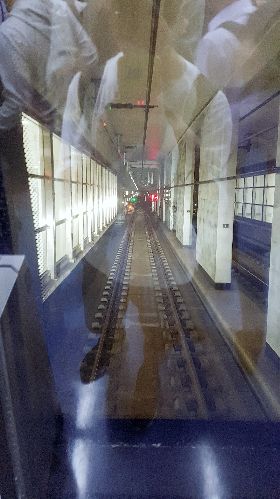

#철도이야기 6
귀가 직후 분당에서 학원 스케줄이 있었지만 귀가 버스를 집으로 신청하는 바람에 버스에서 내리자마자 강남역으로 가 신분당선을 타고 분당으로 갔다. 덕분에 거의 5년 만에 신분당선을 타 볼 수 있게 되었다.
누가 강남역 아니랄까봐, 역시 구내에는 사람들로 가득했다. 신분당선 승강장은 2호선 승강장보다 훨씬 남쪽에 위치해있어 지하 강남역 쇼핑센터를 거쳐갔는데, 몇 달 간 강원도 횡성에 갇혀있다가 정말 오랜만에 사람들로 붐비는 곳을 찾았다. 강남역이나 삼성 코엑스 같은 곳을 가면 볼 수 있는 엄청난 인파, 활기찬 분위기, 휘황찬란한 빛은 횡성의 숲보다 좋았다. 고등학교를 졸업하고 횡성군민에서 서울시민으로 돌아온다면, 맨날 코엑스나 강남역을 떠돌아다니면서 신나게 놀 듯 하다.
신분당선 승강장에 들어섰는데 열차가 이미 입선해있었어서 에스컬레이터를 뛰어내려가 급하게 탔다. (여기서 잠깐! 열차 출발 멜로디나 안내방송이 나올 때에는 열차가 잠시 후 출입문을 닫고 출발하겠다는 뜻이므로 되도록이면 다음 열차를 타자. 이를 일본 철도 용어로 駆け込み乗車라고 하는데, 굉장히 위험할 뿐만 아니라 열차의 지연을 일으키기도 한다. 특히 1호선, 4호선은 열차 배차 간격이 굉장히 짧기 때문에 급하지 않다면 다음 열차를 타도 된다. 일본 간토 지방에는 보통 열차들이 직통 운전을 많이 하는 데다가 열차 등급도 굉장히 다양하기 때문에, 무리해서 승차하다가 인신 사고(人身事故)가 나면 기본적으로 최소 3개의 노선은 마비된다.) 다행히 강남역은 신분당선의 시종착역이기 때문에 정차 시간이 길었고, 탑승 후 약 2분 후에 발차했다. 아, 그리고 안타깝게도 이를 알고 있는 사람이 많이 없는데, 신분당선은 기본적으로 무인자동운전이기 때문에 양쪽 끝에 기관실이 위치해 있지 않아 열차 앞뒤로 뚫려있는 창으로 탁 트인 전망을 즐길 수 있다. 물론 이는 철도 덕후에게 기본 상식이기 때문에, 4호차에 뛰어든 필자는 열차 맨 앞으로 이동해 창 바로 앞 자리를 선점했다.
일부 특급형 객차를 제외한 일본 재래선 열차들은 한국의 열차들과 달리 맨 앞 기관실과 객실이 통유리로 분리되어 있어 객실에서 앞을 보는 것이 가능하다! 이를 일본에서는 보통 前面展望(전면전망/이 글에서도 이 용어를 사용하겠다)라고 하는데, 유투브에 이를 쳐보면 무슨 느낌인지 알 것이다.
전면전망은 생각보다 재미있었다. 무인운전이라 터널 내에 신호기가 거의 없었지만, 분리기나 간간히 나타나는 신호들을 보는 재미가 있었다.
승차감은 나쁘지 않았으나, 일반 열차와 달리 발차할 때 단계적으로 가속이 기계적으로 붙는 것이 신경이 쓰였다.
 무지개 구간 통과 중 차내 LCD 전광판.청계산입구역~판교(판교테크노벨리)역 구간은 역간거리가 꽤 길었다. 운행 중간에 전광판을 찍었는데 남은 거리가 6km라고 나온다. 최고 속도는 90km/h를 유지했다. 이 구간 중간 쯤에는 승객들이 즐길 수 있도록 무지개 색으로 터널 전등들이 색칠되어 있었다.
광교행 기준으로 무지개 구간 초입에서는 下り勾配(일본 철도 용어; 한국어로 직역하면 내리막 구배)가 30퍼밀은 족히 되어보였다. 생각보다 꽤 가파른 경사였지만 한동안 직선 구간이 계속되었기에 속도는 90km/h를 유지했다.
판교역의 한자가 板橋더라. 일본과 타이완에도 각각 JR 동일본 사이쿄선 (埼京線) 이타바시역(板橋駅)과 타이완 철로관리국 종관선 (臺灣鐵路管理局縱貫線), 타이완 고속철도 (臺灣高速鐵路), 타이베이 첩운 반난선 (臺北捷運板南線) 반챠오/팡쿄(대만어 발음)역(板橋車站) 같은 한자를 쓰는 역이 있는데, 신기했다.
판교역 도착 안내방송에서 경강선 환승 안내를 하더라. 이매, 여주역 방면이라고 안내를 했는데, 신설 노선이라 아직 낯설다. 횡성에 있는 동안 수도권 노선도에는 아직 건설 추진 중인 줄로만 알고 있던 경강선, 서해선 (소사원시선) 등이 벌써 개통을 했더라. 깜짝 놀랐다.
 정자역 정차 중인 광교행 열차.   정자역 강남 방면 승강장 LCD 전광판.  정자역 강남 방면 승강장 역명판.  정자역 강남 방면 승강장 스크린도어.집으로 돌아갈 때에도 같은 구간을 탔다. 정자역에서 판교역 가는 구간에서 上り勾配(오르막 구배)가 꽤 가팔랐다. 아마 정자역에서 분당선 승강장 밑을 통과하느라 당시 무환승역이었던 판교역보다 비교적 깊은 곳에 건설되었던 것 같다. 깊게 지어진 지하철이라면 도쿄 도영 지하철이 정말 유명한데, 나중에 한 번 타보고 싶다.
신분당선은 강남~정자역을 16분 만에 주파한다. 실제 주행 시에는 그리 빠르다는 느낌은 안 들었는데 16분 밖에 걸리지 않는다는 것은 버스나 타 교통수단에 비해 확실히 메리트가 있다고 생각한다. 통근 버스로도 30분~1시간은 족히 걸리는 거리인데 말이다. 하지만, 동시에 너무나도 안타까운 노선이다. 서울 구간에서는 양재역에서 3호선과 연계되고 강남역에서 2호선과 만나면서 종착하기 때문에 수도권 중심부로의 접근성 면에서는 굉장히 경쟁력이 떨어진다. 게다가 한 블럭만 위로 가면 9호선 급행 정차역인 신논현역이 있기 때문에 조금만 더 연장되었더라면 9호선 급행과 연계해 서울 서부로의 접근성 면에 있어서도 굉장히 우수한 노선이 되었을 것이다.
 강남역 종착점. 신분당선은 이 앞으로 계속 달려가야 한다.들리는 말에 의하면 신분당선 3차 연장(2차 연장은 노선 남쪽 정자~광교)을 추진 중에 있다고는 하는데, 국토교통부와 신분당선, 서울시 측 간 입장 차이가 너무 심해 지금 계획이 보류되고 있다고 한다. 국토교통부는 용산~서울역 루트를, 서울시에서는 명동~서울시청 루트를 주장했지만 후자는 사업 타당성 조사에서 타당성 없음으로 결론이 났고 결국 용산~서울역 루트로 정해졌다고 한다. 개인적으로 굉장히 찬성이다. 현재 서울의 동서를 이어주는 급행 노선은 9호선이 수행하고 있지만 강남과 강북 도심 지역을 빠르게 이어주는 도심 노선은 존재하지 않는다. 강남에서 서울역이나 시청 쪽을 가려면 남산 2/3호 터널을 경유하더라도 교통 체증이 심각한데, 본래 급행 노선으로 건설되었던 신분당선이 북쪽 연장을 통해 강남~강북 급행 노선으로 제 역할을 확장한다면 정말 황금 노선이 될 것이 틀림없다. 하지만 그만큼 신분당선 측에서도 그 중요성을 미리 인지하고 충분한 대비를 해야할 것이다. 9호선은 서울 동서를 잇는 노선으로서의 중요성을 안고 있지만 급행 열차의 4량 운행으로 이미 포화 상태를 넘어서고 있어 제 역할을 충분히 발휘하지 못하고 있다. 9호선을 타산지석으로 삼아 신분당선은 황금 노선으로 도약해야 한다고 필자는 개인적으로 생각하는 바이다. 앞으로의 무궁무진한 발전을 기대해본다.